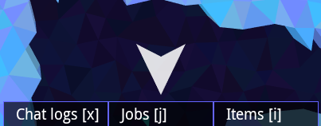
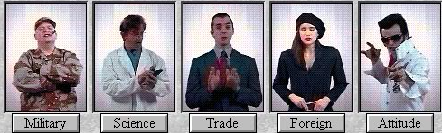

You are bad at playtesting and it's holding you back
Matthew Gatland
indie life
Today's Agenda
what is a playtest
why should i playtest
how do i playtest
common mistakes
playtest
what is playtest
watching someone play
a.k.a. a usability study
but less formal
why do we playtest
fame + fortune
brainware not software
you are not human
how do i playtest
free opportunities (Armageddon, Minicades)
ask your friends
…
matthew's rules of playtesting
7 simple rules
in order of how i felt like ordering them…
1. never reveal anything
this is not your date!
keep quiet and watch what happens!
even subtle hints matter
2. keep detailed notes
OMG HAD TO TELL PLAYER HOW TO SHOT

mira thought the menu hightlights were nav
arrows + tried to follow them
mira still following menu markers
🌟🌟🌟 OMG FIX MENU MARKERS 🌟🌟🌟
3. DON'T ARGUE WITH EVIDENCE
everything that happens is real
…but listen for problems not solutions

4. PUT PEOPLE AT EASE
"We're testing the game, not you."
ask neutral questions
"Why do you keep trying to build things
you can't afford?"
"What does this button do?"
"What are you working on now?
watch your body language!
5. ITERATE RAPIDLY
update during events? 😅
lol microsoft
fake-update by breaking rule 1
6. REACT TO REALITY
change
your
schedule
7. START EARLY
In summary
reveal nothing
keep notes
don't argue with evidence
put people at ease
iterate rapidly
react to reality
start early
k thx bye